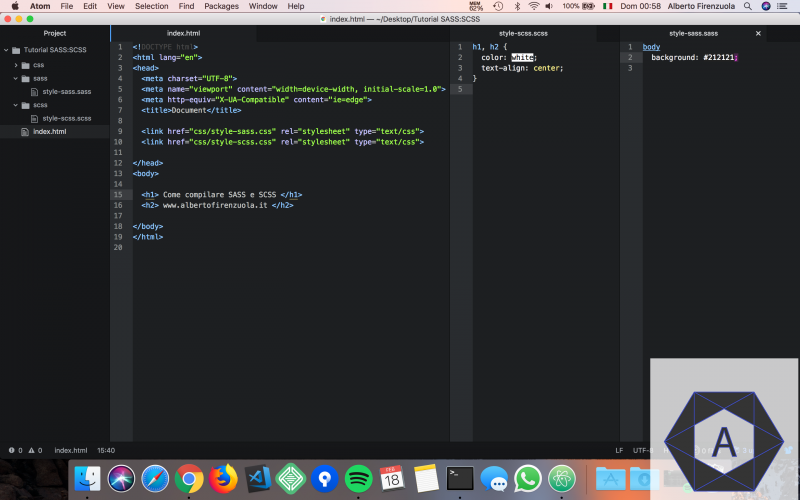
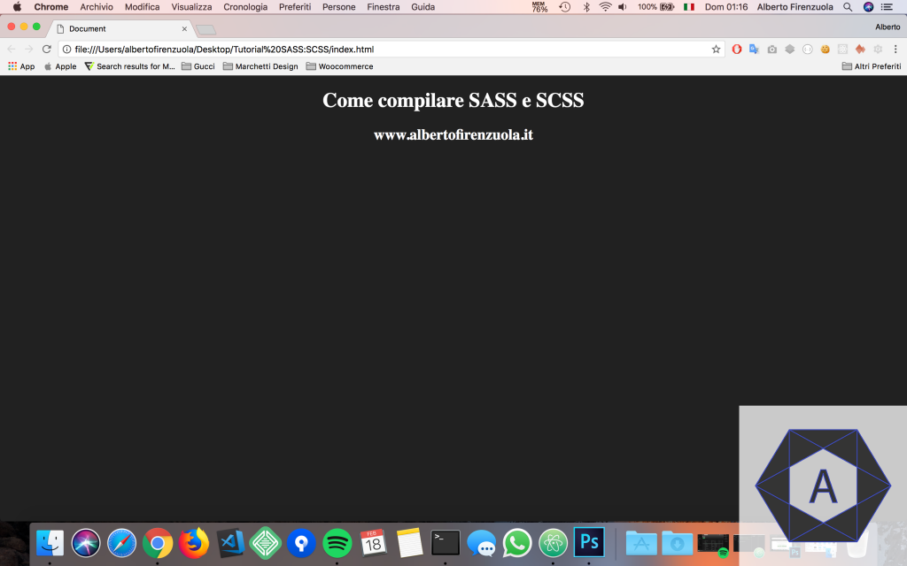
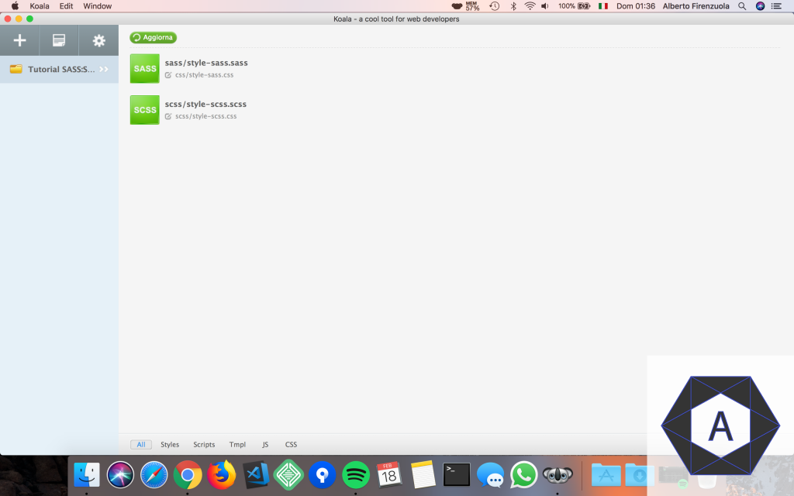

GUIDA SASS e SCSS(sass 3) PER WINDOWS
powered by Gianluca Tuono
Lista di comandi da eseguire per installare, configurare e usare sass sul proprio ambiente :
- Installare NodeJs, potete recarvi qui e scaricare l’ultima
versione (LTS) consigliata
-
– Npm: è il principale software utilizzato per maneggiare e installare moduli NodeJS
– Node-sass: è una libreria che permette di compilare nativamente i file .scss in css ad una velocità
incredibile
Verificare di aver installato nodeJs entrando nella SHELL e digitando il comando :
node -v,
successivamente installare NODE-SASS :
-
Per installare a livello globale Node-sass esegui il comando da SHELL :
npm install node-sass -g
Alla fine dell’installazione verificare sempre che sia installato tutto correttamente eseguendo da SHELL il
comando :
node-sass -v
- Per verificare il corretto funzionamento, creiamo un progetto di prova strutturato nel seguente modo (scrivete
anche il codice che vedete nell’immagine successiva nei file opportuni) :

- A questo punto andremo ad includere nel nostro file index.html il contenuto generato e convertito in css dei
file .sass e .scss, da SHELL eseguendo i comandi :
- script per convertire tutti i file dalla folder scss con estensioni .scss nella folder css :
node-sass scss -o css
- script per convertire tutti i file dalla folder sass con estensioni .saas nella folder css :
node-sass sass -o css
-
oppure creare un file batch salvandolo con estensione .sh inserendo il seguente script :
#!/bin/sh
echo "Creazione script per convertire tutti i file dalla folder scss con estensioni .scss nella folder
css"
node-sass scss -o css
echo "Creazione script per convertire tutti i file dalla folder sass con estensioni .saas nella folder
css"
node-sass sass -o css
-
– Se apriamo la nostra pagina web index.html il risultato sarà il seguente :

- se al posto degli scripts vogliamo utilizzare un software come Koala per la generazione dei file css a partire
da estensioni .sass e .scss , riprendere dal punto 4 e :
- Installare Koala, potete recarvi qui e far partire il
download :
- Dopo averlo installato, apriamo Koala e carichiamo la cartella del progetto, possiamo notare come Koala trovi
tutti i file sass/scss da noi creati indicandoci il nome e il percorso dove Koala inserirà il file con il css
compilato :

automaticamente Koala genererà i file css relativi ai .sass e .scss nella rispettiva folder css .